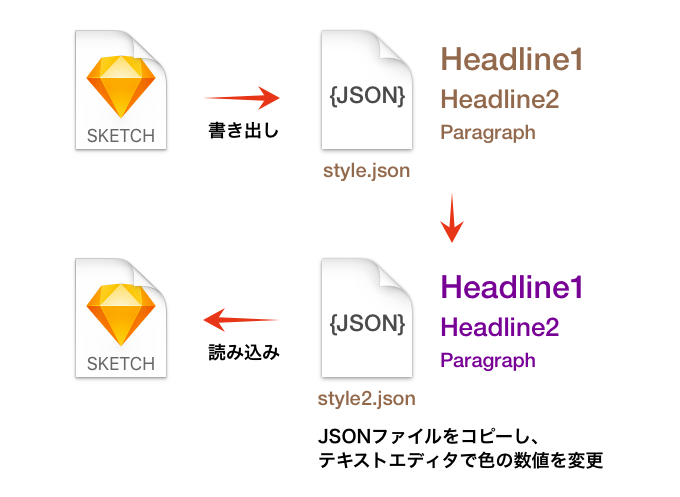

Sketchプラグインを適当に選んで紹介していく、Sketch Plugin Advent Calendar 2016 6日目は、Shared Text Styleを書き出し・読み込みできる「Shared Text Styles」です。
データはJSON形式で書き出されます。
{
"styles":[
{
"name":"paragraph / left",
"font":"NotoSansCJKjp-Regular",
"size":36,
"color": {
"red":1,
"green":1,
"blue":1,
"alpha":1
},
"alignment":4,
"spacing":null,
"lineHeight":0,
"textTransform":0
}
]
}
読み込んだ際、Shared Text Style名が同じであれば上書きされます。書き出したファイルをコピーして、テキストエディタで色の数値を変えてバリエーションを作れば、読み込むだけで色を変更するといった使い方も可能です。

ちなみにショートカットは次の通りです。
- Import: Command ＋ Option ＋ N
- Export: Command ＋ Option ＋ E
3日目に紹介したSketch Paletteもそうですが、中間フォーマットで外部に保存しておけば共有も簡単ですし、Sketchがなくても情報がわかるため、例えばJavaScriptを使ってJSONをパースしCSSへ書き出す、といったこともできます。中間フォーマット、バンザイ！
それでは、楽しいSketchライフを。